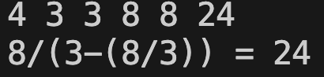
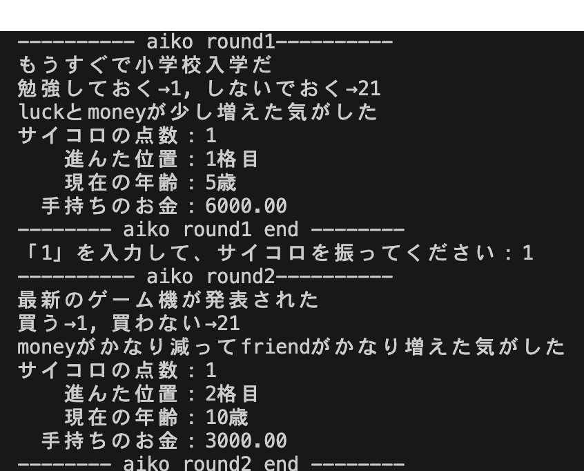
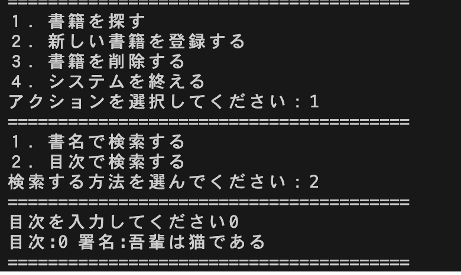

Java 四則運算解題程式
我用 Java 製作了一個四則運算解題程式，讓使用者輸入一組數字和目標值。 我用遞迴搜尋可能的算式，讓每個輸入的數字只使用一次，並將中間結果存成分數。 製作過程中，我學會了如何用遞迴探索不同組合，以及如何避免除法的捨入誤差。

原始碼導讀
查看 Java 原始碼
中原大學生
我目前就讀中原大學 對程式設計與個人化 AI 開發有興趣 我曾用 Python 試作人生遊戲和書籍管理工具，也用 Java 製作四則運算解題程式。 未來，我希望開發能配合不同使用者需求的 AI 工具。
座右銘 コツコツが勝つコツ
持續努力，就是致勝的訣竅。
我用 Java 製作了一個四則運算解題程式，讓使用者輸入一組數字和目標值。 我用遞迴搜尋可能的算式，讓每個輸入的數字只使用一次，並將中間結果存成分數。 製作過程中，我學會了如何用遞迴探索不同組合，以及如何避免除法的捨入誤差。

原始碼導讀
查看 Java 原始碼
我用 Python 製作了一款在終端機遊玩的文字遊戲，並設計了購買遊戲機、選擇職業和旅行等事件。 玩家做出的選擇會改變金錢、運氣或朋友數，其中運氣和朋友數也會影響之後的職業收入。 透過這個作品，我學會了用變數記錄遊戲狀態，並用條件分支處理不同的選擇。

我用 Python 試作了一個書籍管理工具，讓程式從文字檔讀取書名，並在終端機顯示操作選單。 我把查詢、新增和刪除分成不同的函式，讓使用者依書名或清單編號查詢，並在程式執行期間編輯書單。 透過這個作品，我練習了檔案讀取、串列操作，以及如何把不同功能拆成函式。
